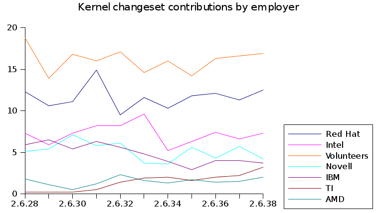

Who wrote 2.6.38
The 2.6.38 cycle has seen 9,148 non-merge changesets from 1,136 developers (again, as of this writing). Compared to 2.6.37 (11,446 changesets from 1,276 developers) those numbers may seem small, but they are on a par with most other recent kernel releases:
Release Changes Devs 2.6.34 9,443 1,151 2.6.35 9,801 1,188 2.6.36 9,501 1,176 2.6.37 11,446 1,276 2.6.38 9,148 1,136
603,000 lines of code were added in this cycle, and 312,000 were removed, for a net growth of 291,000 lines of code. The most active contributors of that code were:
Most active 2.6.38 developers
By changesets Joe Perches 199 2.2% Chris Wilson 182 2.0% Russell King 147 1.6% Mark Brown 143 1.6% Tejun Heo 107 1.2% Ben Skeggs 107 1.2% Alex Deucher 97 1.1% Eric Dumazet 88 1.0% Felix Fietkau 88 1.0% Mauro Carvalho Chehab 83 0.9% Thomas Gleixner 79 0.9% Jesper Juhl 75 0.8% Lennert Buytenhek 72 0.8% Johannes Berg 70 0.8% Stephen Hemminger 70 0.8% Al Viro 68 0.7% Andrea Arcangeli 67 0.7% Clemens Ladisch 66 0.7% Uwe Kleine-König 66 0.7% Nick Piggin 65 0.7%
By changed lines Vladislav Zolotarov 42524 5.8% Nicholas Bellinger 30797 4.2% Larry Finger 23439 3.2% Hans Verkuil 20978 2.9% Barry Song 14174 1.9% Dimitris Papastamos 12794 1.7% Ben Skeggs 11651 1.6% Rafał Miłecki 11149 1.5% Sven Eckelmann 11081 1.5% Mike Frysinger 10692 1.5% Sonic Zhang 8360 1.1% Michael Chan 8280 1.1% Chris Wilson 8164 1.1% Mark Brown 7690 1.0% Chuck Lever 7457 1.0% Joe Perches 7185 1.0% Shawn Guo 6440 0.9% Paul Walmsley 5671 0.8% Mark Allyn 5424 0.7% Nick Piggin 5402 0.7%
Joe Perches made it to the top of the "by changesets" with a long list of patches removing excess semicolons and casts, adding "static" keywords, and other things of that nature. Chris Wilson's changes were entirely in the Intel graphics driver subsystem, Russell King remains active as the lead ARM maintainer, Mark Brown does large amounts of work in the sound driver subsystem, and Tejun Heo had patches all over the tree, most of which are related to cleaning up workqueue usage.
Vladislav Zolotarov's path to the top of the "lines changed" column ostensibly should not exist anymore; among his many bnx2x driver changes was a large firmware replacement. Nicholas Bellinger is the main author of the LIO SCSI target patches which were merged, after extensive discussion, for 2.6.38. Larry Finger added the Realtek RTL8192CE/RTL8188SE wireless network adapter to the staging tree, Hans Verkuil continues his work straightening out the Video4Linux2 subsystem, and Barry Song added a number of IIO drivers to the staging tree.
Work on 2.6.38 was supported by a minimum of 180 employers, the most active of whom were:
Most active 2.6.38 employers
By changesets (None) 1544 16.9% Red Hat 1145 12.5% Intel 664 7.3% (Unknown) 654 7.1% Novell 383 4.2% IBM 334 3.7% (Consultant) 315 3.4% Texas Instruments 290 3.2% AMD 184 2.0% Broadcom 172 1.9% Wolfson Micro 170 1.9% Nokia 169 1.8% Oracle 136 1.5% Samsung 133 1.5% 133 1.5% Atheros 132 1.4% Analog Devices 115 1.3% Fujitsu 112 1.2% Pengutronix 109 1.2% Renesas Tech. 107 1.2%
By lines changed (None) 133902 18.2% Broadcom 97317 13.2% Red Hat 56561 7.7% Intel 44650 6.1% Analog Devices 41083 5.6% Rising Tide Systems 31869 4.3% (Unknown) 30462 4.1% Wolfson Micro 25167 3.4% Texas Instruments 24193 3.3% IBM 16124 2.2% Novell 13939 1.9% (Consultant) 13789 1.9% Freescale 11454 1.6% Nokia 10535 1.4% Oracle 10415 1.4% ST Ericsson 9521 1.3% Renesas Tech. 8534 1.2% Samsung 7988 1.1% AMD 7950 1.1% Oki Semiconductor 7087 1.0%
The most significant new entry is Rising Tide Systems, a storage array company which, unsurprisingly, has an interest in the kernel's SCSI target implementation. Otherwise, the entries at the top of the table have changed little over the last few years; here is a plot showing the trends since 2.6.28:

There is a certain amount of noise, but, over this entire period, non-paid contributors are at the top of the list, followed by Red Hat and Intel, in that order. The most significant trends, perhaps, are TI's steady increase over time, and IBM's slow decline.
Regardless of what individual companies do, though, the real picture that emerges from this data is that the kernel development process remains strong and active. The rate of change remains high, and the community from which those changes come remains large and diverse. There may come a time when the kernel community runs out of ideas and things to do, but it does not seem that things will slow down anytime soon.
[As always, thanks are due to Greg Kroah-Hartman for his assistance in the
creation of these numbers. The tool used to calculate these statistics is
"gitdm"; it can be had at git://git.lwn.net/gitdm.git. The associated
configuration files can be downloaded here.]
| Index entries for this article | |
|---|---|
| Kernel | Releases/2.6.38 |
Posted Mar 3, 2011 6:35 UTC (Thu)
by nikanth (guest, #50093)
[Link] (1 responses)
Posted Mar 3, 2011 9:43 UTC (Thu)
by rahulsundaram (subscriber, #21946)
[Link]
Posted Mar 4, 2011 15:44 UTC (Fri)
by jeremiah (subscriber, #1221)
[Link] (2 responses)
Posted Mar 4, 2011 19:30 UTC (Fri)
by nix (subscriber, #2304)
[Link]
Posted Mar 7, 2011 18:03 UTC (Mon)
by broonie (subscriber, #7078)
[Link]
They also hired a bunch of people who were working on their chips externally (eg, taking contractors on staff) which pushed the numbers for TI itself up.
Posted Mar 6, 2011 22:04 UTC (Sun)
by dps (guest, #5725)
[Link] (2 responses)
One bug has been fixed and another is still at large but hopefully will not be for much longer. A diagnosis and preliminary patch has been sent to an appropriate person.Who wrote 2.6.38
Who wrote 2.6.38
Who wrote 2.6.38
Who wrote 2.6.38
Who wrote 2.6.38
Who wrote 2.6.38